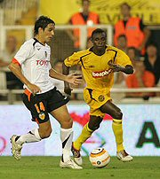

|
||
Roda begon afwachtend aan de wedstrijd in het met 32.000 fans
gevulde Mestalla-stadion. Valencia trok meteen van leer. Vooral aan de
linkerkant, waar Sonko de voorkeur kreeg boven Vicelich, kwamen Edu en Vicente
een paar keer gevaarlijk door. Tot echte grote kansen leidde dat nog niet. De
Limburgse equipe herpakte zich goed en kroop beetje bij beetje uit haar schulp.
Via een prachtige pass van Bodnar op de mannen voorin, Cissé en Koné, kreeg Roda
in de 23ste minuut een dot van een kans. Maar Koné miste eerst de bal en zijn
landgenoot schoot vervolgens vanuit een moeilijke hoek over.
De 2-0, vijf minuten later, kreeg Valencia cadeau van Sergio die een vrije trap zo in de voeten van zijn opponent speelde. Verdediger Pedro Lopez stormde meters op, Vicente nam over en speelde Rufete helemaal vrij. Die kon nog even tot tien tellen, er was in de verste verte geen Roda-verdediger te zien, en de bal rustig achter Kujovic plaatsen. Sergio mocht na dat doelpunt voor straf direct gaan douchen. Kevin van Dessel loste hem af.

Roda kwam niet meer over de schok heen. Invaller Moretti maakte er vlak voor tijd zelfs nog 4-0 van en pas daarna kreeg Rufete zijn welverdiende publiekswissel. ,,Het is vandaag in ieder geval een goede leerschool geweest'', constateerde Roda-coach Huub Stevens. ,,We hebben echt voetballes gekregen. Onze fouten werden genadeloos afgestraft.'' De return van volgend week woensdag lijkt door de fikse nederlaag voor Roda een kansloze missie.
Scoreverloop: 35. Rufete 1-0, 40. Rufete 2-0, 49. Rufete 3-0, 83. Moretti 4-0. |
|
|